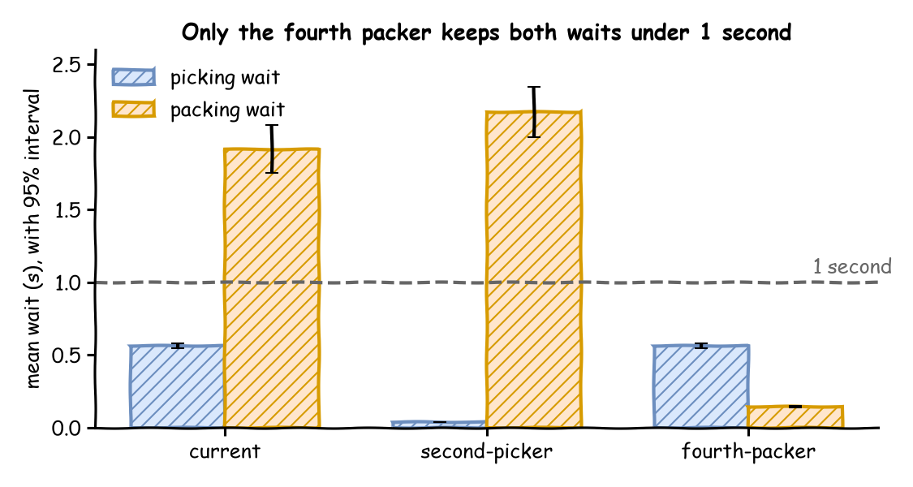

Each earlier page added one idea to the shop and answered one question. This page carries out a whole study, from the shop's own records to a recommendation, in the steps of A Simulation Study. In the busy hour the shop has one picker and three packers, and it can hire one more person, as a second picker or a fourth packer. This page asks: which shop design should be recommended?
Decision: today's shop, a second picker or a fourth packer. The rule: recommend the design in which the upper end of the 95% interval of both mean waits is under 1 second.
Measures: the mean wait for picking and the mean wait for packing, over the orders that start each step after a warm-up, which Choose Warm-up and Precision sets at 2 minutes.
Runs: one busy hour, from an order's arrival to its shipment, with the shelf of shipping boxes and its deliveries. Each design runs 40 replications with the same seeds, spawned from 42. Before that, desflow explain --verify runs 10 replications, and Choose Warm-up and Precision runs today's design 40 times after each of three warm-ups.
Assumptions: orders arrive at random at a steady rate, the picker and the packers work the whole hour, and each order is one parcel in one box.
What You Will Learn
This page shows how to:
carry out a whole study, from the shop's records to a recommendation;
use desflow fit, desflow explain --verify, an experiment and desflow report in the order of a study;
state a decision rule and recommend the design that meets it.
What You Add
This page adds no new feature. The study uses the built-in commands of the earlier pages, in the order of a study:
desflow explain --verify, from Checking a Model, checks the program against the queueing formulas.
An experiment, as in Comparing Designs, compares the model with values observed in the shop, measures each design with the same seeds and checks the decision rule.
desflow report writes the report.
The model puts picking before packing, as in A Flow of Tasks, and adds a shelf of boxes, from which each order takes one, as in Stock.
Fitting needs the fit extra, which adds scipy and matplotlib:
# The desflow command, with uvuvtoolinstall"desflow[fit]"# A Python file, with uv outside a projectuvrun--with"desflow[fit]"pythoncomplete_model.py
# In a uv projectuvadd"desflow[fit]"# With pippipinstall"desflow[fit]"
Fit the Inputs
For each of 300 orders in a busy hour, the shop recorded the gap since the order before, the time to pick the order and the time to pack it, in seconds. complete_model_observed.csv holds them. The values are illustrative, and a real study uses the shop's own records. Save the files from Full Files in one folder, download the records into it, and run the commands there:
# The observed gaps, picking times and packing timescurl-Ohttps://raw.githubusercontent.com/jaehyeon-kim/desflow/v0.28.0/docs/snippets/tutorials/complete_model_observed.csv
# Fit each column and write its best fit to a filedesflowfitcomplete_model_observed.csv--columngap_seconds--lower0--outfitted/complete_orders.yaml
desflowfitcomplete_model_observed.csv--columnpicking_seconds--lower0--outfitted/complete_picking.yaml
desflowfitcomplete_model_observed.csv--columnpacking_seconds--lower0--outfitted/complete_packing.yaml
withOBSERVED.open(newline="",encoding="utf-8")ashandle:rows=list(csv.DictReader(handle))columns={"orders":"gap_seconds","picking":"picking_seconds","packing":"packing_seconds",}# Every column is in seconds, and no time can be below 0return{name:fit_column([float(row[column])forrowinrows],unit="s",lower=0)forname,columnincolumns.items()}
withOBSERVED.open(newline="",encoding="utf-8")ashandle:rows=list(csv.DictReader(handle))columns={"orders":"gap_seconds","picking":"picking_seconds","packing":"packing_seconds",}# Every column is in seconds, and no time can be below 0return{name:fit_column([float(row[column])forrowinrows],unit="s",lower=0)forname,columnincolumns.items()}
The best fit of each column, as desflow fit wrote it:
# Fitted by desflow fit from complete_model_observed.csv, column gap_seconds: exponential, from 300 values in s, written in seconds.dist:exponentialrate:1.50719
# Fitted by desflow fit from complete_model_observed.csv, column picking_seconds: gamma, from 300 values in s, written in seconds.dist:gammashape:4.01421scale:0.110615
# Fitted by desflow fit from complete_model_observed.csv, column packing_seconds: gamma, from 300 values in s, written in seconds.dist:gammashape:8.56765scale:0.204467
Each fit also comes with its diagnostics. The table desflow fit prints for the packing times:
300 rows: 300 used, 0 missing, 0 invalid
family status AIC KS stat KS p (approx.) parameters or reason
exponential rejected its std is 1.752, the data's is 0.5887: more than 25% apart
normal fitted 537.5 0.05413 0.3311 mean=1.7518, std=0.588695 (can draw below the lower bound 0)
lognormal fitted 534.3 0.0501 0.4248 mean=1.75783, std=0.643777
truncated_normal fitted 536.5 0.05303 0.3552 mean=1.74874, std=0.593237, low=0
constant skipped the values are not all equal
uniform rejected its std is 0.9093, the data's is 0.5887: more than 25% apart
triangular fitted 546.3 0.1169 0.0004971 low=0.465992, mode=1.41, high=3.71725
gamma * fitted 523.3 0.02959 0.9484 shape=8.56765, scale=0.204467
weibull fitted 534.9 0.05002 0.427 shape=3.1729, scale=1.95579
empirical fitted values: 300 numbers
* best: gamma
The gamma has the lowest AIC, and its KS p-value of 0.9484 gives no reason to reject it. AIC and the KS Test explains both scores. The same tables give a KS p-value of 0.995 for the exponential of the gaps and 0.634 for the gamma of the picking times.
The gaps fit an exponential distribution at about 1.5 orders a second, which is the distribution of the gaps between orders placed independently of each other. The picking and packing times each fit a gamma distribution, with means of about 0.44 and 1.75 seconds, close to the means of the data. These are inputs: the fit says which distribution draws times like the recorded ones. Whether the model then behaves like the shop is a separate question, answered by its outputs below. The model reads the fits in place of the times:
arrivals:# The fitted gaps between orders; each order starts with pickingorders:!include{file:fitted/complete_orders.yaml, spawn:pick_order}# A delivery of 1,000 boxes every 10 minutesdeliveries:{dist:constant, value:10 min, spawn:restock}services:# The fitted picking and packing timespicking:!includefitted/complete_picking.yamlpacking:!includefitted/complete_packing.yaml
The fitted file of the gaps holds only a distribution, and an arrival also needs its spawn. !include {file: ..., spawn: pick_order} reads the file and adds the other keys to it. Input Fitting describes both forms of !include.
# The fitted gaps between orders; each order starts with picking.add_arrival("orders",**FITS["orders"],spawn="pick_order")# A delivery of 1,000 boxes every 10 minutes.add_arrival("deliveries",dist="constant",value=600,spawn="restock")# The fitted picking and packing times.add_service("picking",**FITS["picking"]).add_service("packing",**FITS["packing"])
FITS holds result.settings() of each fit. It keeps the same six significant digits as the fitted files that the blueprint reads, so the builder draws the same values as the blueprint.
PARAMS=SimParameter(sim_id="Shop",arrival={# The fitted gaps between orders"orders":DistributionConfig(**FITS["orders"]),# A delivery of 1,000 boxes every 10 minutes"deliveries":DistributionConfig(dist="constant",value=600),},# The fitted picking and packing timesservice={"picking":DistributionConfig(**FITS["picking"]),"packing":DistributionConfig(**FITS["packing"]),},# One picker and three packers, as the shop has todayresources={"pickers":CapacityConfig(current_cap=1,max_cap=4),"packers":CapacityConfig(current_cap=3,max_cap=10),},# Shipping boxes: 1,000 on the shelf at the start, and room for 2,000containers={"stock":ContainerConfig(current_cap=2000,max_cap=2000,level=1000)},)
Build the Model
The shop has one picker, three packers and a shelf of shipping boxes:
resources:# One picker and three packers, as the shop has todaypickers:{current_cap:1, max_cap:4}packers:{current_cap:3, max_cap:10}containers:# Shipping boxes: 1,000 on the shelf at the start, and room for 2,000stock:{current_cap:2000, max_cap:2000, level:1000}
# One picker and three packers, as the shop has today.add_resource("pickers",current_cap=1,max_cap=4).add_resource("packers",current_cap=3,max_cap=10)# Shipping boxes: 1,000 on the shelf at the start, and room for 2,000.add_container("stock",current_cap=2000,max_cap=2000,level=1000)
The resources and the shelf are in PARAMS above.
Each order is picked, then packed, then shipped in a box from the shelf. A delivery puts 1,000 boxes on the shelf every 10 minutes:
tasks:pick_order:service:pickingresource:pickerspayload:{event_type:order_picked}next:pack_orderpack_order:service:packingresource:packerspayload:{event_type:order_packed}next:ship_ordership_order:# Each parcel leaves in a box from the shelf; waits while the shelf is emptyget:{container:stock, amount:1}payload:{event_type:order_shipped}restock:put:{container:stock, amount:1000}payload:{event_type:stock_delivered}
@app.task(service_id="picking",resource_id="pickers",next="pack_order")defpick_order(task_id:int):return{"event_type":"order_picked"}@app.task(service_id="packing",resource_id="packers",next="ship_order")defpack_order(task_id:int):return{"event_type":"order_packed"}# Each parcel leaves in a box from the shelf; waits while the shelf is empty@app.task(get={"container":"stock","amount":1})defship_order(task_id:int):return{"event_type":"order_shipped"}@app.task(put={"container":"stock","amount":1000})defrestock(task_id:int):return{"event_type":"stock_delivered"}
# Each task's service, resource and the task after it; None where it has noneTASKS={"pick_order":("picking","pickers","pack_order"),"pack_order":("packing","packers","ship_order"),"ship_order":(None,None,None),}EVENTS={"pick_order":"order_picked","pack_order":"order_packed","ship_order":"order_shipped",}deftask(env,sampler,shop,name,key,task_id,counters):"""Runs one task of an order, then starts the task after it."""service,resource,following=TASKS[name]status={"path_id":f"Shop.service.{service}"}ifserviceelse{}defpublish(value):env.publish_event(key,value,task=name,instance=task_id)ifname=="pick_order":env.stats.flow_started("orders")# the order enters the shoppublish({**status,"status":"queued"})env.stats.task_queued(name,task_id)ifresourceisnotNone:withshop[resource].request()asrequest:yieldrequestpublish({**status,"status":"started"})env.stats.task_started(name,task_id)yieldenv.timeout(sampler.sample(env.registry.get_config(status["path_id"])))publish({"event_type":EVENTS[name]})env.stats.task_finished(name,task_id)else:# Each parcel leaves in a box from the shelf; waits while the shelf is emptyyieldshop["stock"].get(1)publish({"status":"started"})env.stats.task_started(name,task_id)publish({"event_type":EVENTS[name]})env.stats.task_finished(name,task_id)iffollowingisNone:env.stats.flow_finished("orders")# the order leaves the shopreturninstance=next(counters[following])env.process(task(env,sampler,shop,following,key,instance,counters))defrestock(env,shop,key,task_id):"""One delivery: 1,000 boxes onto the shelf, waiting while there is no room."""env.stats.flow_started("deliveries")yieldshop["stock"].put(1000)env.publish_event(key,{"event_type":"stock_delivered"},task="restock",instance=task_id)env.stats.task_finished("restock",task_id)env.stats.flow_finished("deliveries")
shop["stock"].get(1) and put(1000) are SimPy's container operations, which Stock introduced. get waits until the shelf holds a box, and put waits until the shelf has room for the boxes.
The three tabs publish the same records. The model keeps the typical statistics, so each task has a mean wait and each resource a utilisation.
Check the Model
A model is checked twice before it answers anything: against the model on paper, which is verification, and against the shop, which is validation (Checking and Validating).
Against Theory
desflow explain --verify puts the queueing formulas beside 10 replications of the model:
explain reads the one SimulationContext the file defines at module level, app. A builder file has no run.until, so --until gives the length of each run.
desflow explain does not support low-level models. It reads which arrival starts which task and which resource each task uses, and a low-level model does not declare those links: its SimPy code makes them as it runs.
The resources, what is not estimated, and the comparison:
Resources
+---------------------------------------------------------------------+
| resource | λ | μ | c | ρ | Wq | L | status |
|----------+-------+--------+---+--------+--------+-------+-----------|
| pickers | 1.507 | 2.252 | 1 | 0.6692 | 0.5611 | 1.515 | OK |
| packers | 1.507 | 0.5708 | 3 | 0.8801 | - | - | CONGESTED |
+---------------------------------------------------------------------+
Bottleneck: packers
Not estimated:
task ship_order: it has get, which the formulas leave out
task restock: it has put, which the formulas leave out
wait at packers: no closed formula for c > 1 with non-exponential times
container stock: no queueing analysis for a container
Verify: 10 runs to 3600 s, seed 42
+---------------------------------------------------------------------------+
| node | measure | analysis | measured | ± | result |
|------------+--------------+----------+----------+----------+--------------|
| pickers | utilization | 0.6692 | 0.6726 | 0.006723 | agrees |
| pickers | queue_length | 0.8457 | 0.8605 | 0.05853 | agrees |
| packers | utilization | 0.8801 | 0.8816 | 0.009924 | agrees |
| packers | queue_length | - | 2.869 | 0.4413 | not compared |
| pick_order | wait | 0.5611 | 0.5691 | 0.03476 | agrees |
| pack_order | wait | - | 1.895 | 0.2785 | not compared |
| orders | throughput | - | 1.511 | 0.01516 | not compared |
| deliveries | throughput | - | 0.001437 | 0 | not compared |
+---------------------------------------------------------------------------+
Not compared:
packers queue_length: no closed formula for c > 1 with non-exponential times
pack_order wait: no closed formula for c > 1 with non-exponential times
orders throughput: task ship_order: it has get, which the formulas leave out
deliveries throughput: task restock: it has put, which the formulas leave out
--verify checks the implementation against the queueing analysis where it applies; it does not show that the model is close enough to the real system
The comparison covers only the parts the formulas describe:
The picker is one server, and the orders reach it directly, with exponential gaps. For such a server Kingman's formula gives the wait exactly, and the utilisation, the queue and the wait all agree with the runs.
The packers' utilisation agrees too, and at a utilisation of 0.88 they are the bottleneck.
Three packers with gamma times are outside the formulas' assumptions, so their wait has no closed formula, and only the runs measure it.
The shipping step takes a box from the shelf, which the formulas leave out, so the orders' throughput is not compared either.
Agreement shows that the program computes what the model on paper says. It says nothing about whether the model is close enough to the shop.
Against the Shop
Suppose the shop also measured, over the busy hour after its first 2 minutes, a mean wait of 0.57 seconds for picking, 1.9 seconds for packing, and the packers busy 88% of the time. complete_model_outputs.csv, in Full Files, holds these values, with the unit, population and horizon of each. They were chosen by hand to be close to the model's means for today's design, so they agree with the model by construction. The page shows the method, not evidence about a real shop. The experiment run in Compare the Designs places each beside the interval of today's design, current:
# Values made from the model's own runs to show the method, not shop records;# the real shop runs the current designobserved:{file:complete_model_outputs.csv, variant:current}
# Values made from the model's own runs to show the method, not shop records;# the real shop runs the current design"observed":{"file":str(HERE/"complete_model_outputs.csv"),"variant":"current",},
The same key, in the same mapping as the model below.
All three values lie inside the model's interval for their mean: 0.57 inside 0.55 to 0.58 seconds, 1.9 inside 1.75 to 2.08, and 88 inside 87.44 to 88.47.
An interval for a mean is narrow, though, and one observed hour is not a mean. One observed hour varies as much as one run does. Across the 40 replications of current, the standard deviation of one run is:
0.048 seconds for the picking wait;
0.515 seconds for the packing wait;
1.615 percentage points for the packers' utilisation.
Only 7, 9 and 9 of the 40 single runs fall inside the three intervals. A real observed hour can therefore fall outside an interval while the model is right. For this reason a study also compares the observed value with the spread of single runs. Here each observed value lies within one such standard deviation of the model's mean: 0.57 is 0.16 standard deviations from it, 1.9 is 0.03 and 88 is 0.03.
Choose Warm-up and Precision
Each run starts with the shop empty. The real busy hour does not start empty, because orders are already in the shop when it starts. The study therefore treats the hour as steady state and leaves out the empty start. Run today's design 40 times after three candidate warm-ups and compare the mean waits:
# 40 runs with no warm-up: the mean picking and packing waitsWARMUP=0desflowruncomplete_model.yaml--replications40--measuretasks.pick_order.wait_mean--measuretasks.pack_order.wait_mean
WARMUP="10 min" runs the third candidate, and the file's own setting of 2 minutes is the second.
The mean waits over the 40 replications, in seconds, with the 95% half-width:
Warm-up
Picking
Packing
none
0.562 ± 0.014
1.903 ± 0.163
2 minutes
0.562 ± 0.015
1.916 ± 0.165
10 minutes
0.563 ± 0.015
1.915 ± 0.175
Without a warm-up, the mean packing wait is 0.013 seconds lower than with 2 minutes, well inside the half-width. A warm-up of 10 minutes gives the same means as 2 minutes. Every candidate therefore passes the comparison. The rule of Output Analysis also needs the warm-up to cover the climb in a plot of the start. This shop has no plot of its own. Its packers are about as busy as those of Trusting Results, 88% of the time against 90%, and that page's plot climbs for about a minute and a half. The study therefore keeps 2 minutes. The comparison holds for this shop and this hour only, and a busier shop or another horizon needs it run again.
The precision the decision needs is set by the rule: each interval must lie wholly on one side of 1 second. With 40 replications of each design, the experiment below gives half-widths of at most 0.17 seconds. The interval nearest the bound, that of the fourth packer's picking wait, ends at 0.58 seconds. Every interval is far from 1 second, so 40 replications are enough. A design whose interval crossed 1 second would need more replications before it could be decided (How Many Replications).
Compare the Designs
The experiment runs each design 40 times, with the measures of the decision and of the checks:
# The busy hour, with its 2-minute warm-up; 40 runs of each designmodel:complete_model.yamluntil:1 hreplications:40seed:42measures:-tasks.pick_order.wait_mean-tasks.pack_order.wait_mean-resources.packers.utilization_avg-tasks.ship_order.wait_mean
# The busy hour, with its 2-minute warm-up; 40 replications of each design"model":shop,"until":"1 h","replications":40,"seed":42,"measures":["tasks.pick_order.wait_mean","tasks.pack_order.wait_mean","resources.packers.utilization_avg","tasks.ship_order.wait_mean",],
# The busy hour as a LowLevelModel, and its 2-minute warm-up"model":SHOP,"warmup":WARMUP,"until":3600,"replications":40,"seed":42,"measures":["tasks.pick_order.wait_mean","tasks.pack_order.wait_mean","resources.packers.utilization_avg","tasks.ship_order.wait_mean",],
Each design changes one capacity, and every design runs with the same seeds, so each is compared with today's shop seed by seed:
# Every design runs with the same seeds, so they are compared seed by seedpairing:commoncompare:-{baseline:current, variant:second-picker}-{baseline:current, variant:fourth-packer}variants:current:{}second-picker:{Shop.resources.pickers.current_cap:2}fourth-packer:{Shop.resources.packers.current_cap:4}
# Every design runs with the same seeds, so they are compared seed by seed"pairing":"common","compare":[{"baseline":"current","variant":"second-picker"},{"baseline":"current","variant":"fourth-packer"},],"variants":{"current":{},"second-picker":{"Shop.resources.pickers.current_cap":2},"fourth-packer":{"Shop.resources.packers.current_cap":4},
The same keys, in the same mapping as the model.
The checks state the decision rule for the recommended design, and that no order waits for a box in any of the three designs:
checks:# The recommended design: the upper end of each wait's interval is under 1 second-{measure:tasks.pick_order.wait_mean, variant:fourth-packer, max:1}-{measure:tasks.pack_order.wait_mean, variant:fourth-packer, max:1}# In each of the three designs, no order waits for a shipping box-{measure:tasks.ship_order.wait_mean, variant:current, max:0}-{measure:tasks.ship_order.wait_mean, variant:second-picker, max:0}-{measure:tasks.ship_order.wait_mean, variant:fourth-packer, max:0}
"checks":[# The recommended design: the upper end of each wait's interval is under 1 s{"measure":"tasks.pick_order.wait_mean","variant":"fourth-packer","max":1},{"measure":"tasks.pack_order.wait_mean","variant":"fourth-packer","max":1},# In each of the three designs, no order waits for a shipping box{"measure":"tasks.ship_order.wait_mean","variant":"current","max":0},{"measure":"tasks.ship_order.wait_mean","variant":"second-picker","max":0},{"measure":"tasks.ship_order.wait_mean","variant":"fourth-packer","max":0},
The table gives each design's mean waits over its 40 replications, in seconds, and the packers' utilisation in percent, with the 95% half-width:
Design
Picking wait
Packing wait
Packers busy
current
0.56 ± 0.02
1.92 ± 0.16
87.96 ± 0.52
second-picker
0.04 ± 0.00
2.17 ± 0.17
87.95 ± 0.52
fourth-packer
0.56 ± 0.02
0.15 ± 0.01
65.96 ± 0.39

Only the fourth packer keeps both waits under 1 second. Seed by seed, it cuts the packing wait by 1.77 ± 0.16 seconds and leaves the picking wait as it was. A second picker cuts the picking wait by 0.52 ± 0.01 seconds but lengthens the packing wait by 0.26 ± 0.02 seconds.
One picker passes orders on one at a time, with at least one picking time between them. Two pickers pass orders on closer together, nearer the times they arrive, so more orders find all three packers busy. explain named the packers as the bottleneck, and the experiment measures how much each design changes the wait there.
Every design draws from the same three random streams, arrival.orders, service.packing and service.picking, and the constant deliveries draw from none. Every difference is therefore paired. In none of the three designs did an order wait for a box, so the shelf does not limit the answer.
Test the Sensitivity
The recommendation rests on the fitted arrival rate of 1.50719 orders a second. The rate is fitted from 300 gaps. Its standard error is the standard deviation of the fitted rate over repeated samples. For an exponential fit, the standard error is about the rate ÷ √n for n gaps, so here it is about 1/√300 of the rate, about 6%. A 95% interval for the rate reaches about 1.96 standard errors either side, about 11%, so the data cannot rule out a rate 10% higher. The experiment therefore also runs the fourth packer with orders 10% faster, at 1.65791 orders a second. The new variant is a test of the recommendation, not a design to recommend:
# The recommended design, with orders 10% faster than the fitted rate of 1.50719fourth-packer-busier:{Shop.resources.packers.current_cap:4, Shop.arrival.orders.rate:1.65791}
# The recommended design, with orders 10% faster than the fitted rate of 1.50719"fourth-packer-busier":{"Shop.resources.packers.current_cap":4,"Shop.arrival.orders.rate":1.65791,},
The same keys, in the same mapping as the model.
A sixth and a seventh check state that both waits stay under 1 second:
# With orders 10% faster, the fourth packer keeps both waits under 1 second-{measure:tasks.pick_order.wait_mean, variant:fourth-packer-busier, max:1}-{measure:tasks.pack_order.wait_mean, variant:fourth-packer-busier, max:1}
# With orders 10% faster, the fourth packer keeps both waits under 1 s{"measure":"tasks.pick_order.wait_mean","variant":"fourth-packer-busier","max":1,},{"measure":"tasks.pack_order.wait_mean","variant":"fourth-packer-busier","max":1,},
The same key, in the same mapping as the model.
With orders 10% faster, the mean picking wait over the 40 replications is 0.78 ± 0.02 seconds, the mean packing wait 0.23 ± 0.01 seconds, and the packers are busy 72.59 ± 0.41% of the time. Both upper ends stay under 1 second, at 0.80 and 0.24 seconds, so the sixth and seventh checks pass.
The variant shows something the three designs did not: orders now wait for shipping boxes, 0.22 ± 0.14 seconds on average. In 21 of the 40 replications some orders waited for a box, and the highest mean wait of one run was 1.84 seconds. A delivery of 1,000 boxes every 10 minutes is 1.67 boxes a second, only just above 1.66 orders a second. Orders arrive at random, so in some periods they take boxes faster than the deliveries replace them, and the shelf is empty before the next delivery. A busier hour would need larger or more frequent deliveries as well as the fourth packer.
Build the Report
The experiment states its assumptions, where each input came from, and its limits, and writes them into report.md:
assumptions:-Orders arrive at random, at a steady rate, through the busy hour.-One picker and three packers work the whole hour; nobody takes a break.-Every order is one parcel in one shipping box.inputs:Shop.arrival.orders:gaps between 300 orders observed in the shop, fitted by desflow fitShop.service.picking:picking times of the same 300 orders, fitted by desflow fitShop.service.packing:packing times of the same 300 orders, fitted by desflow fitShop.arrival.deliveries:the supplier's schedule, a delivery every 10 minuteslimits:-One busy hour only; the rest of the day is not modelled.-The observed values were made from the model's own runs, so comparing with them shows the method only.output:results/complete-model
"assumptions":["Orders arrive at random, at a steady rate, through the busy hour.","One picker and three packers work the whole hour; nobody takes a break.","Every order is one parcel in one shipping box.",],"inputs":{"Shop.arrival.orders":"gaps between 300 orders observed in the shop, ""fitted by fit_column","Shop.service.picking":"picking times of the same 300 orders, ""fitted by fit_column","Shop.service.packing":"packing times of the same 300 orders, ""fitted by fit_column","Shop.arrival.deliveries":"the supplier's schedule, a delivery every 10 ""minutes",},"limits":["One busy hour only; the rest of the day is not modelled.","The observed values were made from the model's own runs, so comparing ""with them shows the method only.",],"output":"results/complete-model",
The same keys, in the same mapping as the model.
report.md gives the question, the model and its versions, the assumptions, each input with its fitted parameters and provenance, the run settings, the counts, the results, the comparisons, the checks and the observed comparison, then the limits and any input with no provenance. Every input has its provenance, so its Missing Inputs section says "None." Readiness and Reporting lists what else a report of a study needs. The part that answers the question:
Which shop design should be recommended? The fourth packer:
With it, the mean picking wait over 40 replications is 0.56 ± 0.02 seconds and the mean packing wait 0.15 ± 0.01 seconds. Both upper ends are under 1 second, and every check passes.
In today's shop the mean packing wait is 1.92 ± 0.16 seconds, and a second picker would lengthen it by 0.26 seconds.
The model agrees with the formulas where they apply, and each observed value lies inside the model's interval for its mean.
Any warm-up from none to 10 minutes changes the mean waits by less than their half-widths.
With orders 10% faster, the fourth packer still keeps both waits under 1 second, but orders then sometimes wait for shipping boxes.
The data on this page are illustrative, and a real study reaches its recommendation from the shop's own records.
Each step answers a different doubt about the result. The fits test the inputs, the formulas test the program, and the observed values test the model. The warm-up removes the empty start, the replications measure the effect of chance, and the paired seeds measure the size of each difference. A Simulation Study sets out the steps, Checking and Validating the checks, and Output Analysis the warm-up, the replications and the paired comparison. The report records every step in one file, so another reader can repeat the study and see what it rests on.
Key Takeaways
Each step of a study answers a different doubt: the fits test the inputs, the formulas test the program, and the observed values test the model.
A decision rule stated before the runs, such as an upper interval end under 1 second, makes the recommendation a check, not an opinion.
The report records every step in one file, so another reader can repeat the study.
# The Complete Model tutorial: the shop's busy hour, from order to shipment, with its# inputs fitted to the observed orders.# Fit the inputs, then run it:# desflow fit complete_model_observed.csv --column gap_seconds --lower 0 --out fitted/complete_orders.yaml# desflow fit complete_model_observed.csv --column picking_seconds --lower 0 --out fitted/complete_picking.yaml# desflow fit complete_model_observed.csv --column packing_seconds --lower 0 --out fitted/complete_packing.yaml# desflow run complete_model.yamlsimulation:sim_id:Shopfactor:0random_seed:42# Records and statistics start after the first 2 minutes; 0 keeps everythingwarmup:${WARMUP:-2 min}resources:# One picker and three packers, as the shop has todaypickers:{current_cap:1, max_cap:4}packers:{current_cap:3, max_cap:10}containers:# Shipping boxes: 1,000 on the shelf at the start, and room for 2,000stock:{current_cap:2000, max_cap:2000, level:1000}arrivals:# The fitted gaps between orders; each order starts with pickingorders:!include{file:fitted/complete_orders.yaml, spawn:pick_order}# A delivery of 1,000 boxes every 10 minutesdeliveries:{dist:constant, value:10 min, spawn:restock}services:# The fitted picking and packing timespicking:!includefitted/complete_picking.yamlpacking:!includefitted/complete_packing.yamltasks:pick_order:service:pickingresource:pickerspayload:{event_type:order_picked}next:pack_orderpack_order:service:packingresource:packerspayload:{event_type:order_packed}next:ship_ordership_order:# Each parcel leaves in a box from the shelf; waits while the shelf is emptyget:{container:stock, amount:1}payload:{event_type:order_shipped}restock:put:{container:stock, amount:1000}payload:{event_type:stock_delivered}# Waits, utilisation and the stock's level, published at the endstats:{level:typical, interval:1 h}run:until:1 h
# The Complete Model tutorial: which shop design should be recommended?# Run it with: desflow experiment complete_model_experiment.yaml# Rebuild the report from its files with: desflow report results/complete-modelexperiment:complete-modelquestion:Which design keeps both mean waits of the busy hour under 1 second?# The busy hour, with its 2-minute warm-up; 40 runs of each designmodel:complete_model.yamluntil:1 hreplications:40seed:42measures:-tasks.pick_order.wait_mean-tasks.pack_order.wait_mean-resources.packers.utilization_avg-tasks.ship_order.wait_mean# Values made from the model's own runs to show the method, not shop records;# the real shop runs the current designobserved:{file:complete_model_outputs.csv, variant:current}# Every design runs with the same seeds, so they are compared seed by seedpairing:commoncompare:-{baseline:current, variant:second-picker}-{baseline:current, variant:fourth-packer}variants:current:{}second-picker:{Shop.resources.pickers.current_cap:2}fourth-packer:{Shop.resources.packers.current_cap:4}# The recommended design, with orders 10% faster than the fitted rate of 1.50719fourth-packer-busier:{Shop.resources.packers.current_cap:4, Shop.arrival.orders.rate:1.65791}checks:# The recommended design: the upper end of each wait's interval is under 1 second-{measure:tasks.pick_order.wait_mean, variant:fourth-packer, max:1}-{measure:tasks.pack_order.wait_mean, variant:fourth-packer, max:1}# In each of the three designs, no order waits for a shipping box-{measure:tasks.ship_order.wait_mean, variant:current, max:0}-{measure:tasks.ship_order.wait_mean, variant:second-picker, max:0}-{measure:tasks.ship_order.wait_mean, variant:fourth-packer, max:0}# With orders 10% faster, the fourth packer keeps both waits under 1 second-{measure:tasks.pick_order.wait_mean, variant:fourth-packer-busier, max:1}-{measure:tasks.pack_order.wait_mean, variant:fourth-packer-busier, max:1}assumptions:-Orders arrive at random, at a steady rate, through the busy hour.-One picker and three packers work the whole hour; nobody takes a break.-Every order is one parcel in one shipping box.inputs:Shop.arrival.orders:gaps between 300 orders observed in the shop, fitted by desflow fitShop.service.picking:picking times of the same 300 orders, fitted by desflow fitShop.service.packing:packing times of the same 300 orders, fitted by desflow fitShop.arrival.deliveries:the supplier's schedule, a delivery every 10 minuteslimits:-One busy hour only; the rest of the day is not modelled.-The observed values were made from the model's own runs, so comparing with them shows the method only.output:results/complete-model
measure,value,unit,population,horizon
tasks.pick_order.wait_mean,0.57,s,started instances,58 min
tasks.pack_order.wait_mean,1.9,s,started instances,58 min
resources.packers.utilization_avg,88.0,percent,time average,58 min
"""The Complete Model tutorial, builder: which shop design should be recommended?Fits the gaps between orders and the picking and packing times of 300 observedorders, builds the shop's busy hour from the fits, compares three warm-ups, and runsthe experiment that compares the designs, checks them and writes the report. Explainand verify the model with:desflow explain complete_model.py --verify --until "1 h" --replications 10"""importcsvimportloggingfrompathlibimportPathfromdesflowimportSimulationContext,fit_column,replicate,run_experiment# Replications and the experiment log only their warningslogging.getLogger("desflow").setLevel(logging.WARNING)HERE=Path(__file__).resolve().parentOBSERVED=HERE/"complete_model_observed.csv"deffitted()->dict:"""Each input fitted to its column of the observed orders."""withOBSERVED.open(newline="",encoding="utf-8")ashandle:rows=list(csv.DictReader(handle))columns={"orders":"gap_seconds","picking":"picking_seconds","packing":"packing_seconds",}# Every column is in seconds, and no time can be below 0return{name:fit_column([float(row[column])forrowinrows],unit="s",lower=0)forname,columnincolumns.items()}# The best fit of each input: dist and its parametersFITS={name:result.settings()forname,resultinfitted().items()}defshop()->SimulationContext:"""A new busy hour, built from the fits."""app=(SimulationContext(sim_id="Shop",factor=0,random_seed=42,warmup="2 min")# One picker and three packers, as the shop has today.add_resource("pickers",current_cap=1,max_cap=4).add_resource("packers",current_cap=3,max_cap=10)# Shipping boxes: 1,000 on the shelf at the start, and room for 2,000.add_container("stock",current_cap=2000,max_cap=2000,level=1000)# The fitted gaps between orders; each order starts with picking.add_arrival("orders",**FITS["orders"],spawn="pick_order")# A delivery of 1,000 boxes every 10 minutes.add_arrival("deliveries",dist="constant",value=600,spawn="restock")# The fitted picking and packing times.add_service("picking",**FITS["picking"]).add_service("packing",**FITS["packing"])# Waits, utilisation and the stock's level, published at the end.with_stats("typical",interval=3600))@app.task(service_id="picking",resource_id="pickers",next="pack_order")defpick_order(task_id:int):return{"event_type":"order_picked"}@app.task(service_id="packing",resource_id="packers",next="ship_order")defpack_order(task_id:int):return{"event_type":"order_packed"}# Each parcel leaves in a box from the shelf; waits while the shelf is empty@app.task(get={"container":"stock","amount":1})defship_order(task_id:int):return{"event_type":"order_shipped"}@app.task(put={"container":"stock","amount":1000})defrestock(task_id:int):return{"event_type":"stock_delivered"}returnapp# The one context desflow explain complete_model.py readsapp=shop()WAITS=["tasks.pick_order.wait_mean","tasks.pack_order.wait_mean"]DESIGNS=["current","second-picker","fourth-packer"]defwarmups()->dict:"""The mean waits of 40 replications of today's shop, after three candidate warm-ups."""return{warmup:replicate(shop,40,seed=42,until="1 h",warmup=warmup,measures=WAITS)forwarmupin(0,"2 min","10 min")}EXPERIMENT={"experiment":"complete-model","question":"Which design keeps both mean waits of the busy hour under 1 second?",# The busy hour, with its 2-minute warm-up; 40 replications of each design"model":shop,"until":"1 h","replications":40,"seed":42,"measures":["tasks.pick_order.wait_mean","tasks.pack_order.wait_mean","resources.packers.utilization_avg","tasks.ship_order.wait_mean",],# Values made from the model's own runs to show the method, not shop records;# the real shop runs the current design"observed":{"file":str(HERE/"complete_model_outputs.csv"),"variant":"current",},# Every design runs with the same seeds, so they are compared seed by seed"pairing":"common","compare":[{"baseline":"current","variant":"second-picker"},{"baseline":"current","variant":"fourth-packer"},],"variants":{"current":{},"second-picker":{"Shop.resources.pickers.current_cap":2},"fourth-packer":{"Shop.resources.packers.current_cap":4},# The recommended design, with orders 10% faster than the fitted rate of 1.50719"fourth-packer-busier":{"Shop.resources.packers.current_cap":4,"Shop.arrival.orders.rate":1.65791,},},"checks":[# The recommended design: the upper end of each wait's interval is under 1 s{"measure":"tasks.pick_order.wait_mean","variant":"fourth-packer","max":1},{"measure":"tasks.pack_order.wait_mean","variant":"fourth-packer","max":1},# In each of the three designs, no order waits for a shipping box{"measure":"tasks.ship_order.wait_mean","variant":"current","max":0},{"measure":"tasks.ship_order.wait_mean","variant":"second-picker","max":0},{"measure":"tasks.ship_order.wait_mean","variant":"fourth-packer","max":0},# With orders 10% faster, the fourth packer keeps both waits under 1 s{"measure":"tasks.pick_order.wait_mean","variant":"fourth-packer-busier","max":1,},{"measure":"tasks.pack_order.wait_mean","variant":"fourth-packer-busier","max":1,},],"assumptions":["Orders arrive at random, at a steady rate, through the busy hour.","One picker and three packers work the whole hour; nobody takes a break.","Every order is one parcel in one shipping box.",],"inputs":{"Shop.arrival.orders":"gaps between 300 orders observed in the shop, ""fitted by fit_column","Shop.service.picking":"picking times of the same 300 orders, ""fitted by fit_column","Shop.service.packing":"packing times of the same 300 orders, ""fitted by fit_column","Shop.arrival.deliveries":"the supplier's schedule, a delivery every 10 ""minutes",},"limits":["One busy hour only; the rest of the day is not modelled.","The observed values were made from the model's own runs, so comparing ""with them shows the method only.",],"output":"results/complete-model",}defexperiment(output=None):"""Runs the designs; raises CheckFailed when a check fails, after writing every file."""returnrun_experiment(EXPERIMENT,output=output)defrecommended(result)->list:"""The designs whose two mean waits both have an upper end under 1 second; the sensitivity variant is not a design."""upper:dict={}forrowinresult.summary:ifrow["design"]inDESIGNSandrow["statistic"]inWAITS:high=row["mean"]+row["half_width"]upper[row["design"]]=max(upper.get(row["design"],0),high)return[designfordesign,highinupper.items()ifhigh<1]if__name__=="__main__":forname,resultinfitted().items():print(f"{name}:\n{result.text()}\n")forwarmup,resultinwarmups().items():forrowinresult.summary:print(f"warm-up {warmup}: {row['measure']}{row['mean']:.3f} ± {row['half_width']:.3f}")print(f"recommended: {recommended(experiment())}")
measure,value,unit,population,horizon
tasks.pick_order.wait_mean,0.57,s,started instances,58 min
tasks.pack_order.wait_mean,1.9,s,started instances,58 min
resources.packers.utilization_avg,88.0,percent,time average,58 min
"""The Complete Model tutorial, low-level: which shop design should be recommended?Fits the gaps between orders and the picking and packing times of 300 observedorders, builds the shop's busy hour from the fits, checks it against the queueingformulas worked by hand, compares three warm-ups, and runs the experiment thatcompares the designs, checks them and writes the report."""importcsvimportitertoolsimportloggingfrompathlibimportPathfromdesflowimport(CapacityConfig,ContainerConfig,DistributionConfig,DynamicContainer,DynamicRealtimeEnvironment,DynamicResource,LowLevelModel,Sampler,SimParameter,fit_column,replicate,run_experiment,)# Replications and the experiment log only their warningslogging.getLogger("desflow").setLevel(logging.WARNING)HERE=Path(__file__).resolve().parentOBSERVED=HERE/"complete_model_observed.csv"deffitted()->dict:"""Each input fitted to its column of the observed orders."""withOBSERVED.open(newline="",encoding="utf-8")ashandle:rows=list(csv.DictReader(handle))columns={"orders":"gap_seconds","picking":"picking_seconds","packing":"packing_seconds",}# Every column is in seconds, and no time can be below 0return{name:fit_column([float(row[column])forrowinrows],unit="s",lower=0)forname,columnincolumns.items()}# The best fit of each input: dist and its parametersFITS={name:result.settings()forname,resultinfitted().items()}PARAMS=SimParameter(sim_id="Shop",arrival={# The fitted gaps between orders"orders":DistributionConfig(**FITS["orders"]),# A delivery of 1,000 boxes every 10 minutes"deliveries":DistributionConfig(dist="constant",value=600),},# The fitted picking and packing timesservice={"picking":DistributionConfig(**FITS["picking"]),"packing":DistributionConfig(**FITS["packing"]),},# One picker and three packers, as the shop has todayresources={"pickers":CapacityConfig(current_cap=1,max_cap=4),"packers":CapacityConfig(current_cap=3,max_cap=10),},# Shipping boxes: 1,000 on the shelf at the start, and room for 2,000containers={"stock":ContainerConfig(current_cap=2000,max_cap=2000,level=1000)},)# Records and statistics start after the first 2 minutesWARMUP=120.0# Each task's service, resource and the task after it; None where it has noneTASKS={"pick_order":("picking","pickers","pack_order"),"pack_order":("packing","packers","ship_order"),"ship_order":(None,None,None),}EVENTS={"pick_order":"order_picked","pack_order":"order_packed","ship_order":"order_shipped",}deftask(env,sampler,shop,name,key,task_id,counters):"""Runs one task of an order, then starts the task after it."""service,resource,following=TASKS[name]status={"path_id":f"Shop.service.{service}"}ifserviceelse{}defpublish(value):env.publish_event(key,value,task=name,instance=task_id)ifname=="pick_order":env.stats.flow_started("orders")# the order enters the shoppublish({**status,"status":"queued"})env.stats.task_queued(name,task_id)ifresourceisnotNone:withshop[resource].request()asrequest:yieldrequestpublish({**status,"status":"started"})env.stats.task_started(name,task_id)yieldenv.timeout(sampler.sample(env.registry.get_config(status["path_id"])))publish({"event_type":EVENTS[name]})env.stats.task_finished(name,task_id)else:# Each parcel leaves in a box from the shelf; waits while the shelf is emptyyieldshop["stock"].get(1)publish({"status":"started"})env.stats.task_started(name,task_id)publish({"event_type":EVENTS[name]})env.stats.task_finished(name,task_id)iffollowingisNone:env.stats.flow_finished("orders")# the order leaves the shopreturninstance=next(counters[following])env.process(task(env,sampler,shop,following,key,instance,counters))defrestock(env,shop,key,task_id):"""One delivery: 1,000 boxes onto the shelf, waiting while there is no room."""env.stats.flow_started("deliveries")yieldshop["stock"].put(1000)env.publish_event(key,{"event_type":"stock_delivered"},task="restock",instance=task_id)env.stats.task_finished("restock",task_id)env.stats.flow_finished("deliveries")deforder_generator(env,sampler,shop,counters):"""Starts picking for every order, keyed orders-1, orders-2 and so on."""gap=env.registry.get_config("Shop.arrival.orders")fornumberinitertools.count(1):yieldenv.timeout(sampler.sample(gap))instance=next(counters["pick_order"])env.process(task(env,sampler,shop,"pick_order",f"orders-{number}",instance,counters))defdelivery_generator(env,sampler,shop):gap=env.registry.get_config("Shop.arrival.deliveries")fornumberinitertools.count(1):yieldenv.timeout(sampler.sample(gap))env.process(restock(env,shop,f"deliveries-{number}",number-1))defmodel(env,sampler):"""The busy hour in a given environment: the runner sets the statistics."""env.registry.register_sim_parameter(PARAMS)shop={"pickers":DynamicResource(env,"Shop","pickers"),"packers":DynamicResource(env,"Shop","packers"),"stock":DynamicContainer(env,"Shop","stock"),}# One counter per task, shared by the arrivals and the next taskcounters={name:itertools.count()fornameinTASKS}env.process(order_generator(env,sampler,shop,counters))env.process(delivery_generator(env,sampler,shop))defrun(egress=(),until=3600):"""One busy hour from the seed 42, its records sent to `egress`."""env=DynamicRealtimeEnvironment(factor=0.0)# Waits, utilisation and the stock's level, published at the endenv.setup_stats("Shop","typical",interval=3600)env.setup_egress(list(egress),warmup=WARMUP)model(env,Sampler(seed=42))try:env.run(until=until)finally:env.teardown()returnenvSHOP=LowLevelModel(model,sim_id="Shop")WAITS=["tasks.pick_order.wait_mean","tasks.pack_order.wait_mean"]DESIGNS=["current","second-picker","fourth-packer"]defwarmups()->dict:"""The mean waits of 40 replications of today's shop, after three candidate warm-ups."""return{warmup:replicate(SHOP,40,seed=42,until=3600,warmup=warmup,measures=WAITS)forwarmupin(0,WARMUP,600)}EXPERIMENT={"experiment":"complete-model","question":"Which design keeps both mean waits of the busy hour under 1 second?",# The busy hour as a LowLevelModel, and its 2-minute warm-up"model":SHOP,"warmup":WARMUP,"until":3600,"replications":40,"seed":42,"measures":["tasks.pick_order.wait_mean","tasks.pack_order.wait_mean","resources.packers.utilization_avg","tasks.ship_order.wait_mean",],# Values made from the model's own runs to show the method, not shop records;# the real shop runs the current design"observed":{"file":str(HERE/"complete_model_outputs.csv"),"variant":"current",},"pairing":"common","compare":[{"baseline":"current","variant":"second-picker"},{"baseline":"current","variant":"fourth-packer"},],"variants":{"current":{},"second-picker":{"Shop.resources.pickers.current_cap":2},"fourth-packer":{"Shop.resources.packers.current_cap":4},"fourth-packer-busier":{"Shop.resources.packers.current_cap":4,"Shop.arrival.orders.rate":1.65791,},},"checks":[{"measure":"tasks.pick_order.wait_mean","variant":"fourth-packer","max":1},{"measure":"tasks.pack_order.wait_mean","variant":"fourth-packer","max":1},{"measure":"tasks.ship_order.wait_mean","variant":"current","max":0},{"measure":"tasks.ship_order.wait_mean","variant":"second-picker","max":0},{"measure":"tasks.ship_order.wait_mean","variant":"fourth-packer","max":0},{"measure":"tasks.pick_order.wait_mean","variant":"fourth-packer-busier","max":1,},{"measure":"tasks.pack_order.wait_mean","variant":"fourth-packer-busier","max":1,},],"assumptions":["Orders arrive at random, at a steady rate, through the busy hour.","One picker and three packers work the whole hour; nobody takes a break.","Every order is one parcel in one shipping box.",],"inputs":{"Shop.arrival.orders":"gaps between 300 orders observed in the shop, ""fitted by fit_column","Shop.service.picking":"picking times of the same 300 orders, ""fitted by fit_column","Shop.service.packing":"packing times of the same 300 orders, ""fitted by fit_column","Shop.arrival.deliveries":"the supplier's schedule, a delivery every 10 ""minutes",},"limits":["One busy hour only; the rest of the day is not modelled.","The observed values were made from the model's own runs, so comparing ""with them shows the method only.",],"output":"results/complete-model",}defexperiment(output=None):"""Runs the designs; raises CheckFailed when a check fails, after writing every file."""returnrun_experiment(EXPERIMENT,output=output)defrecommended(result)->list:"""The designs whose two mean waits both have an upper end under 1 second; the sensitivity variant is not a design."""upper:dict={}forrowinresult.summary:ifrow["design"]inDESIGNSandrow["statistic"]inWAITS:high=row["mean"]+row["half_width"]upper[row["design"]]=max(upper.get(row["design"],0),high)return[designfordesign,highinupper.items()ifhigh<1]if__name__=="__main__":forwarmup,resultinwarmups().items():forrowinresult.summary:print(f"warm-up {warmup} s: {row['measure']}{row['mean']:.3f} ± {row['half_width']:.3f}")print(f"recommended: {recommended(experiment())}")
measure,value,unit,population,horizon
tasks.pick_order.wait_mean,0.57,s,started instances,58 min
tasks.pack_order.wait_mean,1.9,s,started instances,58 min
resources.packers.utilization_avg,88.0,percent,time average,58 min